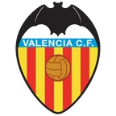

Вильярреал — ПСЖ итог матча 3 ноября
- ТурнирЛига чемпионов
- Когда3 ноября, вторник, 23:00 МСК
Коротко о матче
Итог: Вильярреал — ПСЖ 0:6. Перед матчем серия — ПСЖ: 9 побед подряд. Голы за игру в последних 5: Вильярреал — 1,6 забито и 1,4 пропущено, ПСЖ — 3,6 и 1,2. Обе команды играют результативно: больше 2,5 голов было в 11 из 16 их последних матчей. Дома Вильярреал: 2 победы в 6 матчах; в гостях ПСЖ: 5 побед в 7.
Форма: последние матчи
Вильярреал 2 победы из 5
 В3:1
В3:1- Н0:0
 П3:4
П3:4
В2:1- П0:1
ПСЖ 5 побед из 5
 В4:2
В4:2 В3:1
В3:1 В4:2
В4:2 В2:0
В2:0 В5:1
В5:1
Положение в таблице
| Команда | Место | И | В | Н | П | Голы | Очки |
|---|---|---|---|---|---|---|---|
| Вильярреал | 28 | 4 | 1 | 0 | 3 | 8:14 | 3 |
| ПСЖ | 1 | 4 | 4 | 0 | 0 | 20:5 | 12 |
Страница клуба: Вильярреал · Страница клуба: ПСЖ · Лига: Лига чемпионов · Прогноз на сегодня: Лига чемпионов · Все матчи дня колодой
Материалы носят информационный характер и не гарантируют результат. Реклама букмекеров на сайте не размещается. Сайт только для совершеннолетних (18+).